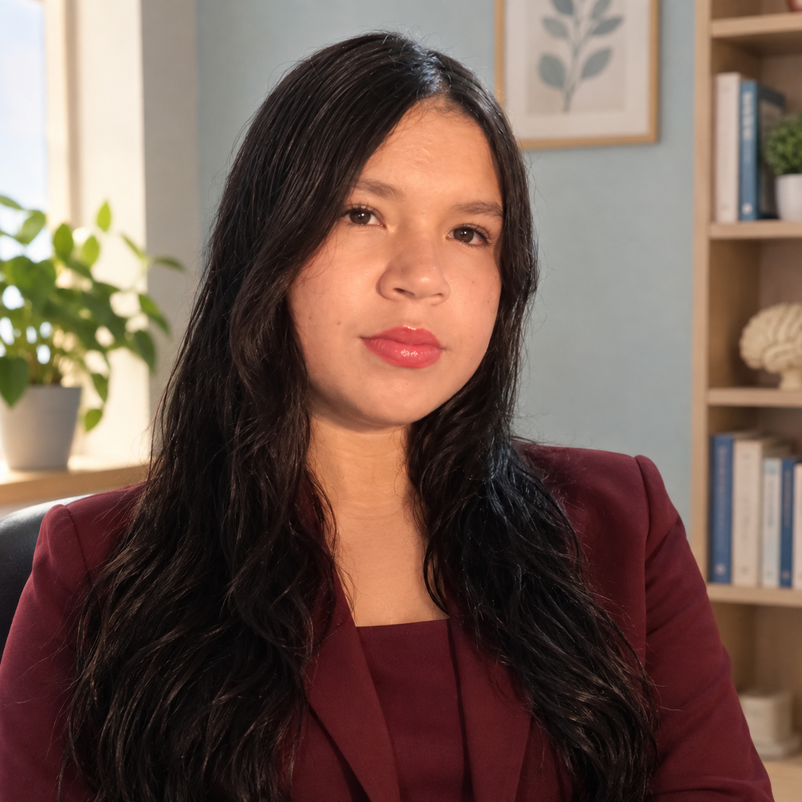

Un espacio para escucharte y comprenderte
Mi compromiso es ofrecerte una atención respetuosa,
profesional y enfocada en tus necesidades.
Soy la Lic. en Psicología Lizethe Landín Ríos. Mi objetivo es brindar orientación y acompañamiento
psicológico en un ambiente de respeto, empatía y confianza, donde cada persona pueda expresar sus
pensamientos y emociones sin temor a ser juzgad@.

Creo en la importancia de la salud mental y en la necesidad de contar con espacios donde las personas
puedan comprender mejor sus experiencias, reconocer sus emociones y desarrollar herramientas para
afrontar las diferentes situaciones de la vida.